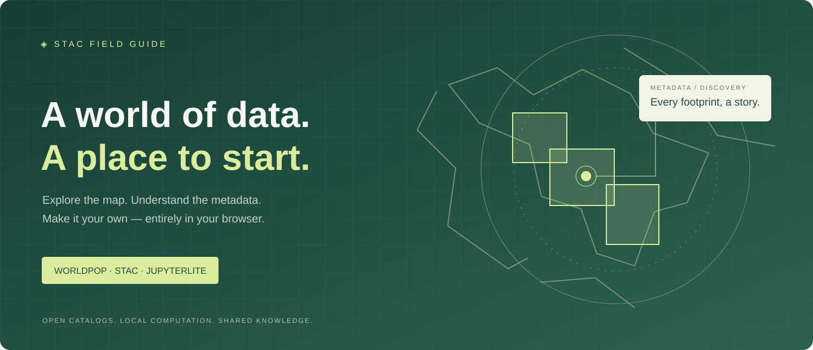

One workflow. Three ways in.
Discover WorldPop and Earth observation metadata, inspect its source, and reproduce your search in browser Python. No accounts or backend kernels.
01 · Explore the map ↗
Connect to public STAC catalogs. Search an area and inspect its metadata footprints.
Open the explorer →02 · Run the notebooks ↗Launch the map, search WorldPop, and save reproducible results with Pyodide.
Open JupyterLite →03 · Read the field guide ↗Learn the workflow, understand the architecture, and find sources and attribution.
Open the Jupyter Book →Footprints show metadata coverage, not population raster values. Internet access is needed for catalogs, map tiles, and the initial Python runtime download.